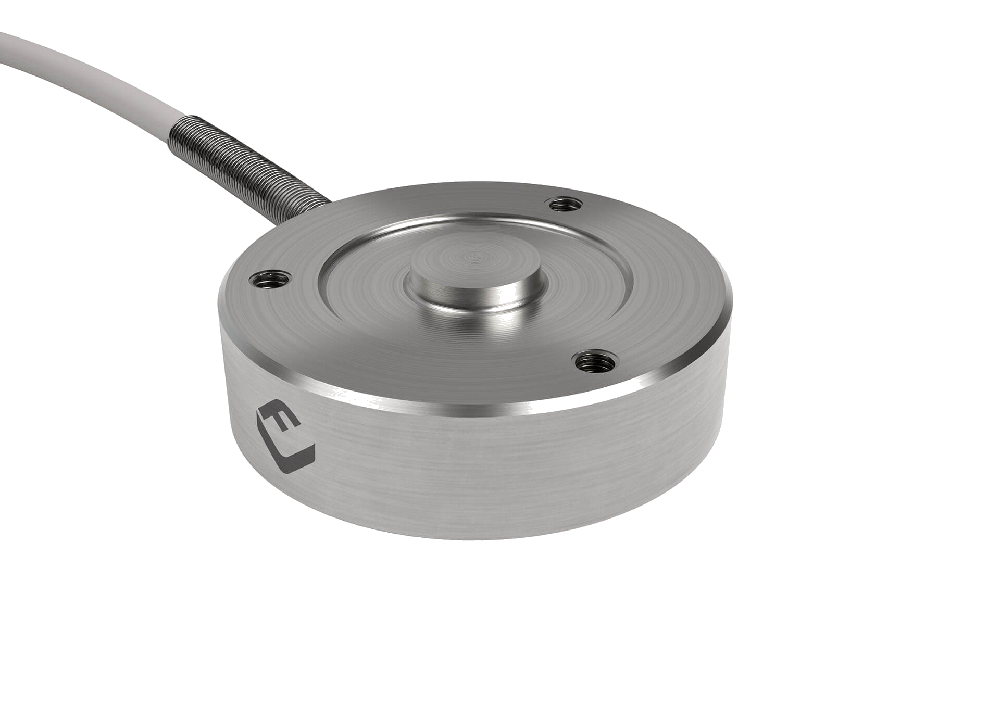

La danse n’est que des mouvements physiques.
Le sol de danse mesure ces mouvementés avec des caméras et des capteurs de force.
Las données de caméras
La rôle principale du programme est suivre las orientations des pieds et leur distribution de poids.
On peut diviser toutes les images en trois partes colorimétriques (plus blanche = valeur plus grand):
La teinte
La saturation
La valeur
Avec des limites supérieurs et inferieurs des valeurs, on peut distinguer las chaussettes de l’image de fond.
Pourquoi existent las formes sur le dessous de las chaussettes?
En utilisant las limites susmentionnées, on établit las formes des pieds utilisent un détecteur de contours.
On peut classer les contours (et las formes qui représentent) avec des moments d’image.
Ces moments répondent seulement aux modifications de la forme, mais pas aux modifications d’orientation ni d’échelle.
Observez comment lesdites modifications changent la similarité (plus rogue = moins pareille)
La invariabilité de rotation
La variabilité de forme
La invariabilité d’échelle
La distance de la caméra, la distribution du poids, et l’obstruction visuelle déforment les conteurs des pies.
Ces déformations on permet classifier les états des pies (p.ex. les poids distribués sous le talon).
Mais, les contours gauches et droits sont très pareils l’un à l’autre.
Las formes distinctes sur les dessous on permet distinguer le pied droit du gauche.
Les capteurs de force
Les contours des pieds on permettent déterminer la localisation, l’orientation, et l’état des pieds.
Mais on ne peut déterminer la force transmis par chaque pied.
Les capteurs de force sont des traducteurs qui transmettent électricité a la mesure de la force appliquée.
Utilisant leur emplacement et conductivité électrique, on peut trianguler l’emplacement de la force nette.
Si un pied est plus proche à la force nette que l’autre, il transmet une portion plus grande de la force.
